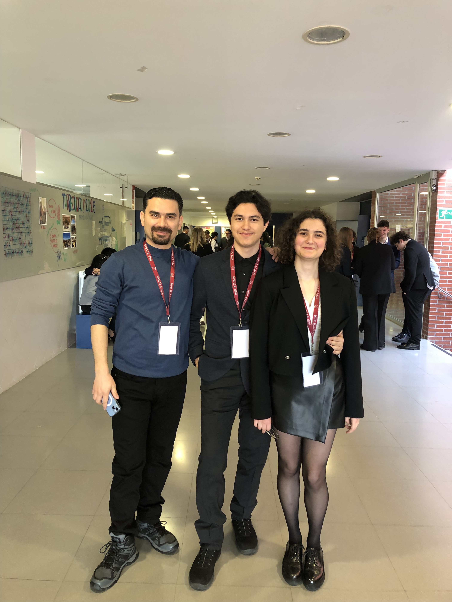

Where Curiosity
Meets Creation.
I am Nevzat Salih Uzkeser — an IB DP student at Bilkent Erzurum Laboratory School. Passionate about STEM, software engineering, and systems technology. Building ad-free tools like ToneTunnel Video Downloader and exploring local AI.

Academic focus. Practical building.
Student by day. Developer by night.
I live in Turkey and study at Bilkent Erzurum Laboratory School (BELS). After successfully finishing the Cambridge IGCSE curriculum, I am currently enrolled in the rigorous International Baccalaureate (IB) Diploma Programme in DP Year 2.
I have a deep curiosity for Science, Technology, Engineering, and Mathematics (STEM). Alongside my academic studies, I spend my free time programming, exploring system architectures, and learning game development.
My approach to building is simple: create straightforward, ad-free utilities that solve real problems — whether that is routing audio across multiple output devices in Windows, converting music URLs across streaming services, or translating indie fan games for Turkish players.
Selected projects & tools
Let's build something together.
Whether you're interested in discussing STEM subjects, collaborating on open-source tools, or sharing feedback — feel free to email me directly at nevzatuzkeser@gmail.com.